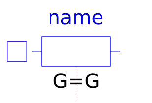
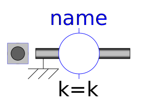
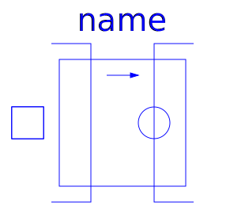
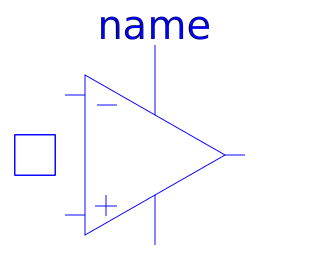

This package contains very basic analog electrical components such as resistor, conductor, capacitor, inductor, and the ground (which is needed in each electrical circuit description. Furthermore, controlled sources, coupling components, and some improved (but nevertheless basic) are in this package.
| Name | Description |
|---|---|
| Ground node | |
| Ideal linear electrical resistor | |
| Temperature dependent electrical resistor | |
|  Conductor | Ideal linear electrical conductor |
| Ideal linear electrical capacitor | |
| Ideal linear electrical inductor | |
| Simple model of an inductor with saturation | |
| Transformer with two ports | |
| Generic transformer with free number of inductors | |
| Gyrator | |
|  EMF | Electromotoric force (electric/mechanic transformer) |
| Electromotoric force (electric/mechanic transformer) | |
| Linear voltage-controlled voltage source | |
| Linear voltage-controlled current source | |
|  CCV | Linear current-controlled voltage source |
| Linear current-controlled current source | |
| OpAmp | Simple nonideal model of an OpAmp with limitation |
|  OpAmpDetailed | Detailed model of an operational amplifier |
| Ideal linear electrical resistor with variable resistance | |
| Ideal linear electrical conductor with variable conductance | |
| Ideal linear electrical capacitor with variable capacitance | |
| Ideal linear electrical inductor with variable inductance | |
| Adjustable resistor | |
|
|
Signal adaptor for an Electrical OnePort with voltage and derivative of voltage as outputs and current and derivative of current as inputs (especially useful for FMUs) |
|
|
Signal adaptor for an Electrical OnePort with current and derivative of current as output and voltage and derivative of voltage as input (especially useful for FMUs) |
Copyright © 1998-2019, Modelica Association and contributors